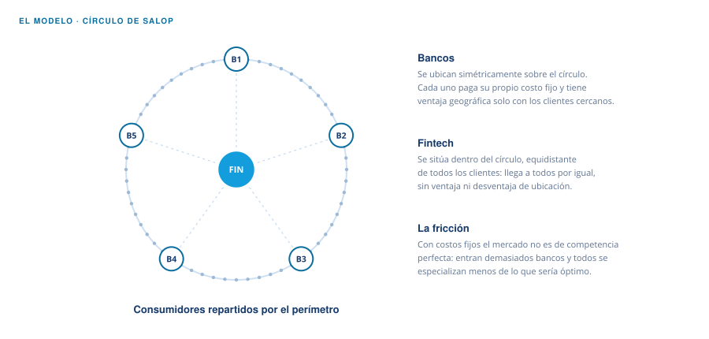
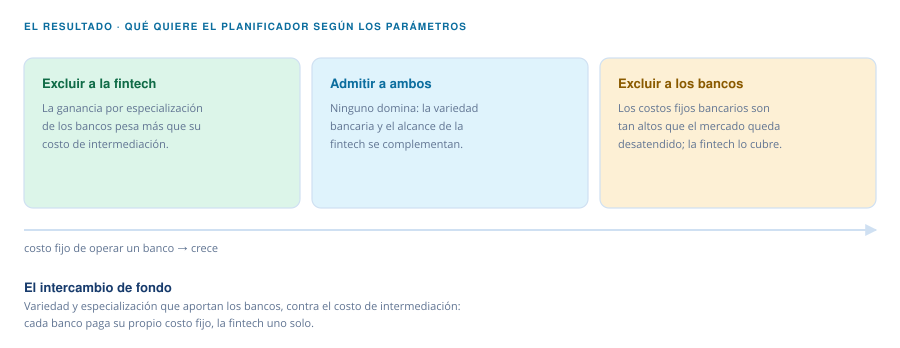

Documento de trabajo RedNIE N.º 327 · Febrero 2024
Banks or Fintechs? A Roadmap for Regulation
Francisco Jesús Guerrero López · Paula Margaretic · Lucía Quesada · Federico Sturzenegger
Universidad de San Andrés · Universidad de Chile
Cómo funciona el modelo
El paper pregunta si tiene sentido regular a las fintechs con la vara de los bancos. La respuesta no es un sí ni un no: es un mapa de regiones, y lo que mueve la frontera es cuánto cuesta sostener una institución bancaria.
El modelo
Los bancos se ubican simétricamente sobre un círculo de Salop, con los consumidores repartidos por el perímetro. La innovación —siguiendo a Madden y Pezzino (2011)— es meter una fintech dentro del círculo, equidistante de todos los clientes: no tiene ventaja geográfica con nadie, pero tampoco desventaja. Bancos y fintech eligen su grado de especialización y pagan un costo fijo.

Ese costo fijo es lo que rompe la competencia perfecta. Como cada intermediario enfrenta una demanda con pendiente negativa, el equilibrio de mercado produce entrada excesiva de bancos y menor especialización que la socialmente deseable. Un planificador preferiría lo contrario: menos bancos, más especializados.
El resultado
No hay una respuesta única: hay regiones de parámetros. Para algunos valores el planificador quiere excluir a los intermediarios no bancarios; para otros quiere excluir a los bancos y dejar toda la intermediación en manos de la fintech; y en el medio admite a ambos. Lo que decide es el intercambio entre la ganancia por especialización que aportan los bancos y el costo de intermediación, más alto en la banca porque cada institución paga su propio costo fijo.

Por qué importa
Existen regiones donde el costo fijo bancario es tan alto que el mercado queda desatendido por la banca aunque la fintech podría servirlo. Ahí, prohibirle intermediar genera una pérdida de bienestar significativa. El modelo también encaja con lo que se observa en la industria: la competencia de las grandes tecnológicas es intensa en el negocio minorista y mucho menor en el crédito corporativo, justo donde la especialización pesa más. La conclusión es que, para ciertos tipos de crédito, la regulación bancaria es más restrictiva con los no bancos de lo que conviene.
Guerrero López, F., Margaretic, P., Quesada, L. y Sturzenegger, F. (2024). Banks or Fintechs? A Roadmap for Regulation. Documento de trabajo RedNIE N.º 327.